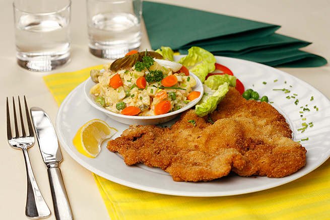

Schnitzel with potatoes

Description
Schnitzel with potatoes is a classic Czech dish that features a thin, breaded and fried cutlet of pork or veal served with crispy potatoes. The meat is typically pounded thin and then coated in flour, egg, and breadcrumbs before being fried until golden brown. The potatoes are usually sliced thin and pan-fried until crispy, often with onions or other vegetables. The dish is typically served with a side of pickles or a simple salad for a satisfying and hearty meal.
(and it's also good)
Ingredients
For the schnitzel:
- 4 boneless pork chops
- 1/2 cup all-purpose flour
- 1/2 teaspoon salt
- 1/4 teaspoon black pepper
- 2 eggs
- 1 tablespoon milk
- 1 cup breadcrumbs
- 1/4 cup vegetable oil
For the potatoes:
- 4 medium potatoes
- 1 tablespoon vegetable oil
- 1 tablespoon unsalted butter
- 1/2 teaspoon salt
- 1/4 teaspoon black pepper
- 1/2 teaspoon paprika
Preparation
- Peel the potatoes and cut them into thin slices. Rinse them under cold water and pat them dry
- Heat some oil in a pan and fry the potatoes until they are crispy and golden brown. Set them aside
- Put the flour, breadcrumbs, and a pinch of salt and pepper into separate bowls
- Beat the egg in a separate bowl
- Dip each slice of meat first in the flour, then in the beaten egg, and finally in the breadcrumbs, making sure they are coated evenly
- Heat some oil in a pan and fry the meat until it is golden brown and cooked through
- Serve the schnitzel with the fried potatoes on the side
Enjoy!
Back to homepage